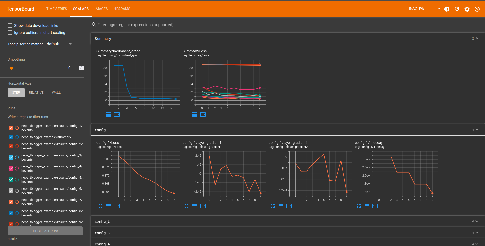
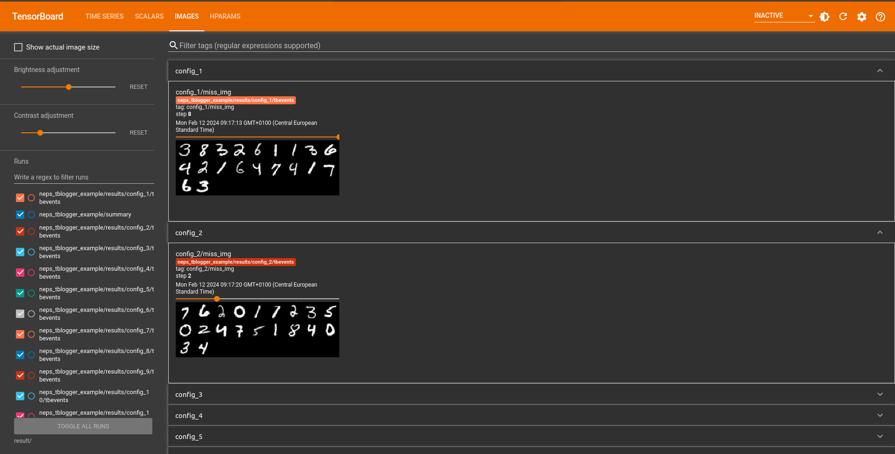
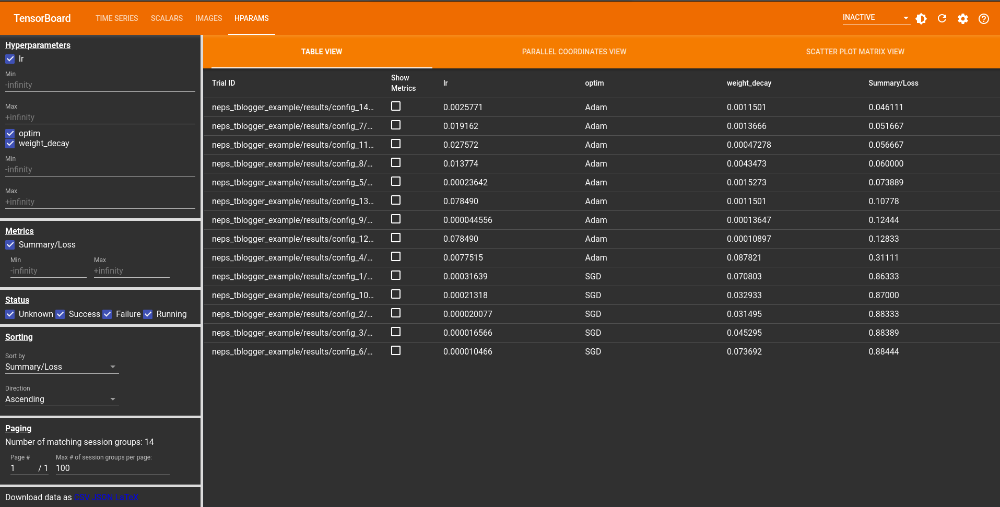
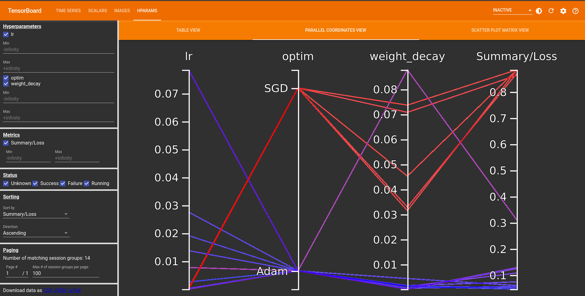
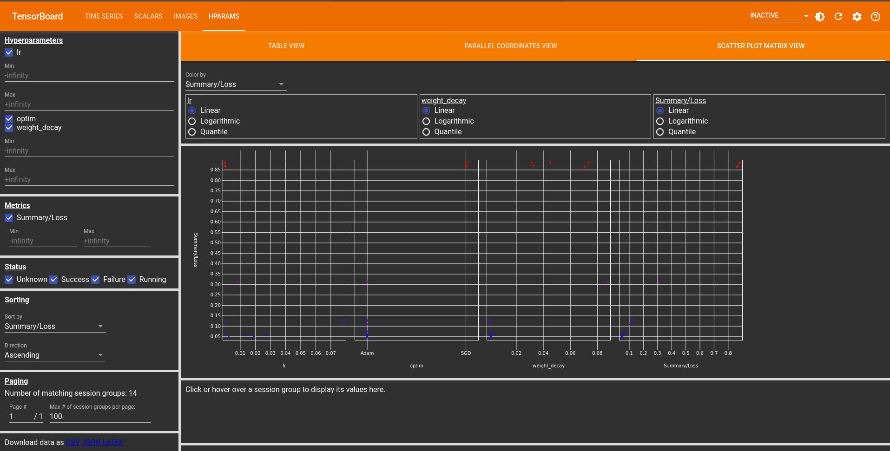

Analysing Runs#
NePS has some convenient utilities to help you to understand the results after you've run your runs.
All of the results and state are stored and communicated on disk, which you can access using
the python -m neps.status ROOT_DIRECTORY command or integrate live logging directly into your training loop
and visualize the results using TensorBoard.
To get a quick overview of the results, you can use the python -m neps.plot ROOT_DIRECTORY command.
Status#
To show status information about a neural pipeline search run, use
If you need more status information than is printed per default (e.g., the best config over time), please have a look at
Using watch
To show the status repeatedly, on unix systems you can use
CLI commands#
To generate plots to the root directory, run
Currently, this creates one plot that shows the best error value across the number of evaluations.
What's on disk?#
In the root directory, NePS maintains several files at all times that are human readable and can be useful
If you pass the post_run_summary= argument to neps.run(),
NePS will also generate a summary CSV file for you.
The config_data.csv contains all configuration details in CSV format, ordered by ascending loss.
Details include configuration hyperparameters, any returned result from the evalute_pipeline function, and metadata information.
The run_status.csv provides general run details, such as the number of sampled configs, best configs, number of failed configs, best loss, etc.
TensorBoard Integration#
TensorBoard serves as a valuable tool for visualizing machine learning experiments, offering the ability to observe losses and metrics throughout the model training process. In NePS, we use this to show metrics of configurations during training in addition to comparisons to different hyperparameters used in the search for better diagnosis of the model.
Logging Things#
The tblogger.log() function is invoked
within the model's training loop to facilitate logging of key metrics.
We also provide some utility functions to make it easier to log things like:
- Scalars through
tblogger.scalar_logging() - Images through
tblogger.image_logging()
You can provide these through the extra_data= argument in the tblogger.log() function.
For an example usage of all these features please refer to the example!
tblogger.log(
loss=loss,
current_epoch=i,
write_summary_incumbent=False, # Set to `True` for a live incumbent trajectory.
writer_config_scalar=True, # Set to `True` for a live loss trajectory for each config.
writer_config_hparam=True, # Set to `True` for live parallel coordinate, scatter plot matrix, and table view.
# Name the dictionary keys as the names of the values
# you want to log and pass one of the following functions
# as the values for a successful logging process.
extra_data={
"lr_decay": tblogger.scalar_logging(value=scheduler.get_last_lr()[0]),
"miss_img": tblogger.image_logging(image=miss_img, counter=2, seed=2),
"layer_gradient1": tblogger.scalar_logging(value=mean_gradient[0]),
"layer_gradient2": tblogger.scalar_logging(value=mean_gradient[1]),
},
)
Tip
The logger function is primarily designed for use within the evalute_pipeline function during the training of the neural network.
Quick Reference
Log experiment data to the logger, including scalar values, hyperparameters, and images.
| PARAMETER | DESCRIPTION |
|---|---|
objective_to_minimize
|
Current objective_to_minimize value.
TYPE:
|
current_epoch
|
Current epoch of the experiment (used as the global step).
TYPE:
|
writer_config_scalar
|
Displaying the objective_to_minimize or accuracy curve on tensorboard (default: True)
TYPE:
|
writer_config_hparam
|
Write hyperparameters logging of the configs.
TYPE:
|
write_summary_incumbent
|
Set to
TYPE:
|
extra_data
|
Additional experiment data for logging.
TYPE:
|
Source code in neps/plot/tensorboard_eval.py
Prepare a scalar value for logging.
| PARAMETER | DESCRIPTION |
|---|---|
value
|
The scalar value to be logged.
TYPE:
|
| RETURNS | DESCRIPTION |
|---|---|
Tuple
|
A tuple containing the logging mode and the value for logging. The tuple format is (logging_mode, value). |
Source code in neps/plot/tensorboard_eval.py
Prepare an image tensor for logging.
| PARAMETER | DESCRIPTION |
|---|---|
image
|
Image tensor to be logged.
TYPE:
|
counter
|
Counter value associated with the images.
TYPE:
|
resize_images
|
List of integers for image sizes after resizing. |
random_images
|
Images are randomly selected if True.
TYPE:
|
num_images
|
Number of images to log.
TYPE:
|
seed
|
Seed value or RandomState instance to control randomness.
TYPE:
|
| RETURNS | DESCRIPTION |
|---|---|
tuple[str, Tensor, int, list[None | int] | None, bool, int, int | RandomState | None]
|
A tuple containing the logging mode and all the necessary parameters for image logging. Tuple: (logging_mode, img_tensor, counter, resize_images, random_images, num_images, seed). |
Source code in neps/plot/tensorboard_eval.py
Visualizing Results#
The following command will open a local host for TensorBoard visualizations, allowing you to view them either in real-time or after the run is complete.
This image shows visualizations related to scalar values logged during training. Scalars typically include metrics such as loss, incumbent trajectory, a summary of losses for all configurations, and any additional data provided via the extra_data argument in the tblogger.log function.

This image represents visualizations related to logged images during training. It could include snapshots of input data, model predictions, or any other image-related information. In our case, we use images to depict instances of incorrect predictions made by the model.

The following images showcase visualizations related to hyperparameter logging in TensorBoard. These plots include three different views, providing insights into the relationship between different hyperparameters and their impact on the model.
In the table view, you can explore hyperparameter configurations across five different trials. The table displays various hyperparameter values alongside corresponding evaluation metrics.

The parallel coordinate plot offers a holistic perspective on hyperparameter configurations. By presenting multiple hyperparameters simultaneously, this view allows you to observe the interactions between variables, providing insights into their combined influence on the model.

The scatter plot matrix view provides an in-depth analysis of pairwise relationships between different hyperparameters. By visualizing correlations and patterns, this view aids in identifying key interactions that may influence the model's performance.
